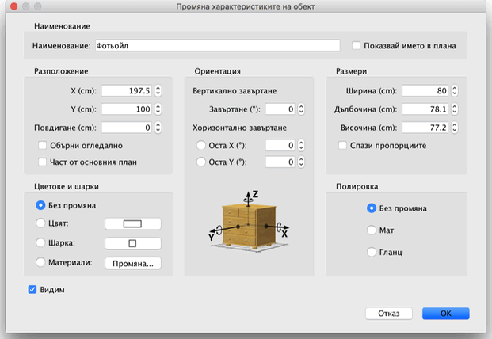

| Редактиране на мебелировката | |||
|
Можете да промените мястото, големината, повдигането от
пода и завъртането на всеки обект от мебелировката или чрез мишката,
или от менюто Мебелировка > Промени.... Когато е маркиран един обект в плана, Вие можете да промените размерите му, повдигането или завъртането чрез някой от четирите индикатора, разположени до всеки от ъглите на обекта.
|

|
|
Когато попадне върху някой от тези ъгли, показалецът
на мишката се променя за да покаже, че сте на мястото, което можете да
"хванете". Когато хванете някой от индикаторите до него ще се появи
подсказка с текущата стойност на параметъра, който променяте. Характеристиките на обект от мебелировката можете да променяте и чрез неговия панел с параметри, който ще се появи ако цъкнете двойно върху обекта в плана или в списъка с обекти, или като го маркирате и изберете менюто Мебелировка > Промени... .  В появилия се панел, Вие можете да промените името на
обекта, координатите на неговия център по X и Y в плана, повдигането на
основата му от пода, ширината и дълбочината му, неговия цвят, шарка
или блясък,
дали да е видим, завъртането му, дали името му да се изобразява в плана
и да го обърнете огледално, ако е необходимо. |
|